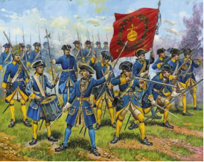

Северная война
Весной 1706 года, когда шел 6-ой год Северной войны, военные действия достигли Полесья. В марте этого года союзническая армия России и Речи Посполитой оказалась в тяжелом положении около Гродно и быстрым маршем отходила в сторону Бреста, чтобы потом через Волынь пройти на соединение с главными силами Петра I на Полтавщине. Шведский король Карл XII сначала стремился догнать противников, но, разгадав направление их движения, решил идти наперерез этому войску через Пинск. И несколько военных корпусов вместе с главными силами самого Карла XII стали двигаться в направлении Слонима, Хомска, Пинска. Расставленные на нашей территории небольшие гарнизоны русской армии не могли сдержать главных сил шведов, и в середине апреля Карл XII сумел занять Пинск. На западе от Иваново и до Антополя развернулся корпус фельдмаршала Мардефельта: 4 тысячи пехоты и 3 тысячи конницы (в основном драгуны).В начала мая 1706 г. многие села и городки полесской стороны (в том числе и Дрогичин) были заняты шведами.

Шведская пехота времён Северной войны
Армии подошли к Ясельде и остановились недалеко от замка Жабер, который принадлежал роду князей Вишневецких. Тут и начали разворачиваться основные военные события. С начала крепость пытались взять поляки, сторонники Станислава Лещинского, который был союзникам шведов. Штурм закончился неудачей. Тогда Карл XII отдал приказ генералу Мардэфельту подтянуть свой корпус к Жаберу. И в середине мая 1706 года шведский корпус на какое-то время оставил Дрогичин и по Хомской дороге направился к Жаберу. В скором времени к замку подошел и сам король Карл XII.Командующий русским гарнизоном, немец Ботман, открыл ворота замка и сдал шведам укрепления.После взятия Жабера Мардефельт вновь направился на юг с целью перейти на Волынь. Вместе со шведами в городки и села вошли также поляки Лещинского, корпус которых насчитывал около 8тысяч человек. Таким образом, на небольшом пространстве Загародья были сконцентрированы значительные военные силы, которые, не распологали достаточным количеством фуража и необходимым запасам продовольствования. Скоро войска охватил голод, они начали грабить и отнимать продовольствие у местного населения. Однако прокормить армию, которая во много раз превосходила количество жителей, все равно было невозможно.Голодные шведы и поляки свирепствовали, нередко отнимая в населения последний кусок, убивали при этом людей. О возникшей ситуации А. Д. Меншиков писал Петру I следующим образом: "…превеликий у неприятеля голод, понеже уже и солому с трудом сыскивают ". В след Меншиков генерал Мережков сообщал, что захватчики "…кормят лошадей сечкою…, чего ради мучают, вешают и жгутмужиков, как прежде никогда ни бывало, дабы ямы хлебные показывали".В эти трагические дни наш город подвергся новому опустошению: были сожжены Дрогичин, Стараселле и Заречка, где в то время почти вдвое сократилась количество населения. Корпус Мардэфельта вынужден был держаться на Полесье, так как Карл XII еще не начал переход на Украину.
Началось лето 1706 года, но проблема продовольствия для армии по-прежнему оставалась острой, и шведские захватчики буквально опустошали Загородье. Почти все захваченные неприятелем населённые пункты были разорены, жители сёл искали укрытия в лесах и на болотах. Еврейское население, которое сначала пыталось откупиться от захватчиков, всё же было ограблено, и многие дрогичинские купцы были убиты. И только в августе 1706 года шведская армия оставила Дрогичин и вместе с другими силами стала двигаться в Польшу, где под городом Калишем была разгромлена русско-саксонской армией под командованием А.Д. Меншикова. Было это 28 октября 1706 года.В Дрогичине понемногу начала обновляться жизнь. Но память о Северной войне сохраняется до наших дней, о чем свидетельствуют названия некоторых местностей и урочищ. Так жители деревень Именин, Брашевич, Лежитковичей от своих предков знают, что на окраинах данных населённых пунктов долгое время сохранялись следы шведских погостов.